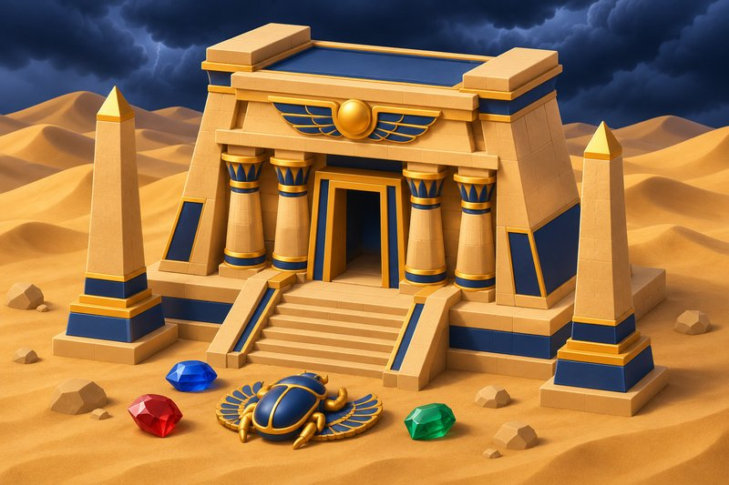

戰神賽特是什麼？ATG 埃及神話老虎機一代二代規格總覽
戰神賽特是 ATG 電子推出的古埃及神話主題老虎機，主角是掌管沙漠與風暴的神祇賽特。這個名字其實涵蓋先後推出的兩款遊戲：一代 Storm of Seth，以及副標為「覺醒之力」的二代。
剛開始查戰神賽特的人，常會發現網路上的數字彼此對不起來，原因多半是文章沒有講清楚寫的是哪一代。這篇把兩代的基本資料、共通規格與各自的特色分開整理，當成一份總覽來讀就可以了。
這款遊戲的來歷
開發商與題材
開發商 ATG 電子替這款遊戲選了古埃及神話當背景。賽特在神話裡掌管沙漠、風暴、戰爭與混亂，因為嫉妒而殺害象徵生命與秩序的兄長歐西里斯，之後又和姪子荷魯斯長期爭奪王權，所以多半被當成反派。不過他同時也是法老與神明的保護者，沙漠與熱風正是古埃及抵禦外敵的天然邊境。遊戲裡的聖甲蟲、荷魯斯之眼等符號，也都出自同一套神話。
兩代的推出時間
- 2023 年 9 月 7 日，一代 Storm of Seth 推出。
- 2025 年 7 月，二代推出測試版。
- 2025 年 11 月 4 日，二代「戰神賽特2 覺醒之力」（Storm of Seth 2: Awakening）正式發行。
兩代共通的四項規格
不管是哪一代，下面這四點都相同，也是認識這款遊戲時最先要記住的部分。
- 盤面是 6 軸 5 列，一共 30 格。
- 沒有賠付線，採用「隨處支付」：盤面任意位置出現 8 個以上相同符號就派彩，不必連線，也不必相鄰。
- RTP 為 96.89%。
- 屬於高波動機台，官方標示為 Advanced。
這裡的 RTP 是長期、大量樣本下的理論返還率，不能拿來推算某一轉或某一個晚上的結果。高波動的意思則是主遊戲的小獎不密集，可能很長一段時間都進不了免費遊戲，獎金集中在少數回合。
一代與二代差在哪裡
最高倍率
一代的最高倍率是 51,000 倍，二代提高到 81,000 倍，大約是一代的 1.58 倍。這兩個數字都是理論上限，出現的機率極低，比較適合當成規格來理解，而不是遊玩時的目標。
倍數的運作方式
一代：靈魂之火
一代以聖甲蟲作為免費遊戲的觸發符號，同一回合集滿 4 個就會進入。倍數來自隨機出現的靈魂之火，最高 500 倍，免費遊戲期間每次出現都會讓倍數持續累積。500 倍並不是每次都會出現的固定數值。整體路線比較直線：進免費遊戲、掉倍數、消除、加進全局倍率。
二代：倍數球與兩個覺醒符號
二代把倍數改成隨機掉落的倍數球，倍率範圍從 2x 到 500x，主遊戲和免費遊戲都會出現。同一轉有消除、盤面上又有倍數球，加成才會生效。
男賽特負責分裂
盤面出現 3 個男賽特加上任 1 顆倍數球時，倍數球會隨機分裂成 1 到 6 顆，不一定分裂到滿。
女賽特負責鎖定
盤面出現 3 個女賽特加上任 1 顆倍數球時，倍數球會被鎖定最多 6 回合，期間不會消失。
兩個符號搭在一起
女賽特把球留住，男賽特把球變多，形成滾雪球的結構。資訊站形容這是 81,000 倍上限的關鍵，但兩者的觸發都是隨機的。
二代的其他規格
二代採用消除掉落機制：達標的符號消除後，上方符號往下補位，有可能連續消除。押注範圍在資訊站首頁列為 1 到 2,000，試玩頁則寫通常是 0.2 到 2,000、部分平台最小為 0.4，實際以遊戲介面為準。遊戲採 HTML5，支援 iOS、Android、Windows 與 Mac，用瀏覽器就能開啟，不用下載 App。此外還內建 ATG 跨機台的累積獎池，分成 GRAND、MAJOR、MINOR、MINI 四級，在遊戲中隨機觸發，中獎機率極低，多數玩家不會遇到。
這些資料的出處
本文的數字取自「戰神賽特資訊站」。該站以戰神賽特2 為核心，內容分成機制與玩法、機台比較、延伸知識等類別，資料來源是 ATG 官方規則書與公開文件，再加上試玩紀錄。不同平台的介面設定可能略有出入，遇到數字不一致時，仍以遊戲內的說明為準。
讀完規格，再想想自己的界線
規格寫得再詳細，戰神賽特終究是涉及金錢的遊戲，有可能造成財務損失。每一轉都由亂數產生器決定，彼此獨立、沒有記憶，沒有任何方法可以預先知道結果。
未滿 18 歲不得參與，參與之前也請先確認所在地的法規。真的要玩，先訂好金額與時間的上限，到了就停，輸了也不追。把它當成一筆娛樂支出，會比把它當成投資來得健康。
※ 本文僅為遊戲機制與背景的資訊整理，不構成任何建議；實際規則以遊戲內說明為準。未滿 18 歲請勿參與，並請留意所在地法規。